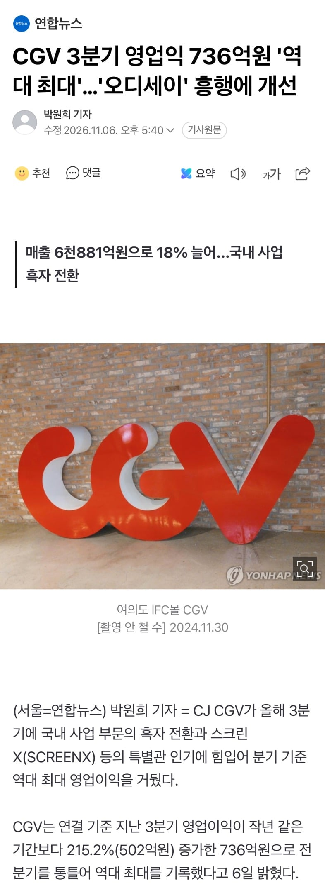

https://n.news.naver.com/article/001/0016426980?sid=103
'오디세이', '스파이더맨: 브랜드 뉴 데이'(이하 '스파이더맨 4') 등의 할리우드 블록버스터가 아이맥스(IMAX)·스크린X·4DX 등 특별관 중심으로 흥행하면서 수익성 개선을 이끌었다. 국내 CGV 전체 관객에서 특별관 관객이 차지하는 비중이 2019년 3분기 6.7%에서 올해 3분기 18.1%까지 커졌다.

https://n.news.naver.com/article/001/0016426980?sid=103
'오디세이', '스파이더맨: 브랜드 뉴 데이'(이하 '스파이더맨 4') 등의 할리우드 블록버스터가 아이맥스(IMAX)·스크린X·4DX 등 특별관 중심으로 흥행하면서 수익성 개선을 이끌었다. 국내 CGV 전체 관객에서 특별관 관객이 차지하는 비중이 2019년 3분기 6.7%에서 올해 3분기 18.1%까지 커졌다.
현실은 스크린쿼터제 때문에 용아맥에도 실낙원, 최종면접 이딴 영화들 걸고 오디세이 내려야 됨 ㅋㅋㅋㅋㅋ 법만 없었어도 영업익 더 올릴 수 있었지 한국에서는 아이맥스는 커녕 비스타 비전으로 찍는 영화 조차도 없는데 뭔놈의 의무 상영
ㅋㅋㅋ
한국 영화 살리자고 영화배우들 전부 나와서 스크린쿼터제 기자회견하고 홍보하고 그랬는데
그리고 .해외명품으로 치장하고 수입차타고가더라
연예인도 방송복장에 국산 의류 쿼터제 하면 되겠네
진짜 병신같은 법이지
이게 영화산업을 더 망치는건데
눈가리고 아웅이지
법도 때가 있는거고 그때는 필요했을지 몰라도 지금은 독인 법 같음 아무리 봐도. 차라리 독립영화들을 지원하는 법이나 새로 만들지
천만이 몇개나오니까 금방 회복되긴하네
튀르키예에 투자했다 망한걸
그리스가 살려준다
터키 투자 실패해서 막 흑자매장이던 수원역까지 메가박스에 뺏기고 망할거 같더니 살아나네 ㅋㅋ
물가가 너무 올라서 티켓값이 감당하게 될만한 상황
ㄹㅇ 이제 영화표값 다시 싸게 느껴짐
ㅈㄹㄴ
알바세요!? 아직도 뜨~끈한 국밥 값보다 비싼거 이해 안됩니다만!
이것 저것 할인 받으면 11000원 으로 보던데 이거보다 싼건 내가 아직 경험을 못해봄
요즘 특별관 말고 일반관 정가주고보는사람
있긴한가싶음ㅋㅋ
내주변엔 멤버쉽용말곤 일단없음
극장가격 최고 비쌀때 옛날 수준으로 관객들 몰려서 역대 최고 찍은건가
요시조아, 치이카와조아 청년들도 보탬이 되었으려나 ㅋㅋ
올해 왕사남도 있었고 괜찮은게 시즌마다 나오긴 했네
그러고보니 올해 영화관 많이 가긴했다
솔까 영화보다 팝콘통 장사해서 살린듯 ㅋㅋ
영화만 갖고는 티켓가격 올리는대로 욕이나 먹으니 굿즈 장사로 잘 틀었어
와 한동안 삼하 분기 영익 100조니 뭐니 보다가 이거 보니까 반도체가 어마어마한 규모긴 하구나...
영화값 더더욱 안내리겟구만
판교 CGV 돌려줘 ㅠㅠ
올해영화 맛잇었지
이야 이걸 살아나네
12월에 둠스도 있고
하는 꼬라지보면 갈길이 먼데 사라지는건 또 아쉽다
둠스데이로 한탕 해야지
영화가 재밌으면 사람들이 찾는다 재밌게 만들어라고
흑자를 내?
진짜 걍 한국영화가 문제였던거임 ;;
왕사남이 보여줬지ㅋㅋ
재밌으면 소비한다
너무 외부요인에 취약해
외화영화로 돈 벌어서 국내 영화사에 그대로 투자해주시는 CGV ㅠㅠ
세금도 겁나 때려부었잖아
월즈 결승 4시던데
상영해주냐? ㅋㅋ
스파이더 맨이랑 오딧세이로 벌고 12월엔 듄이랑 둠스데이까지..
요즘 굿즈로도 돈 많이 벌고있지 않나
스크린쿼터 폐지하고 영화관이 한국영화 몇퍼센트 지원하게해라 차라리
치이카와도 한몫했을듯
그러니까 쿼터제같은 이상한거하지말아라